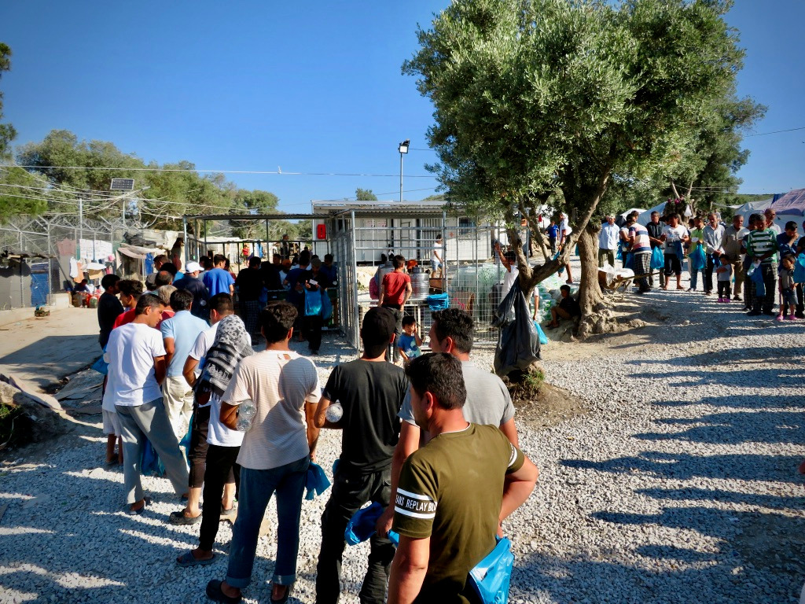
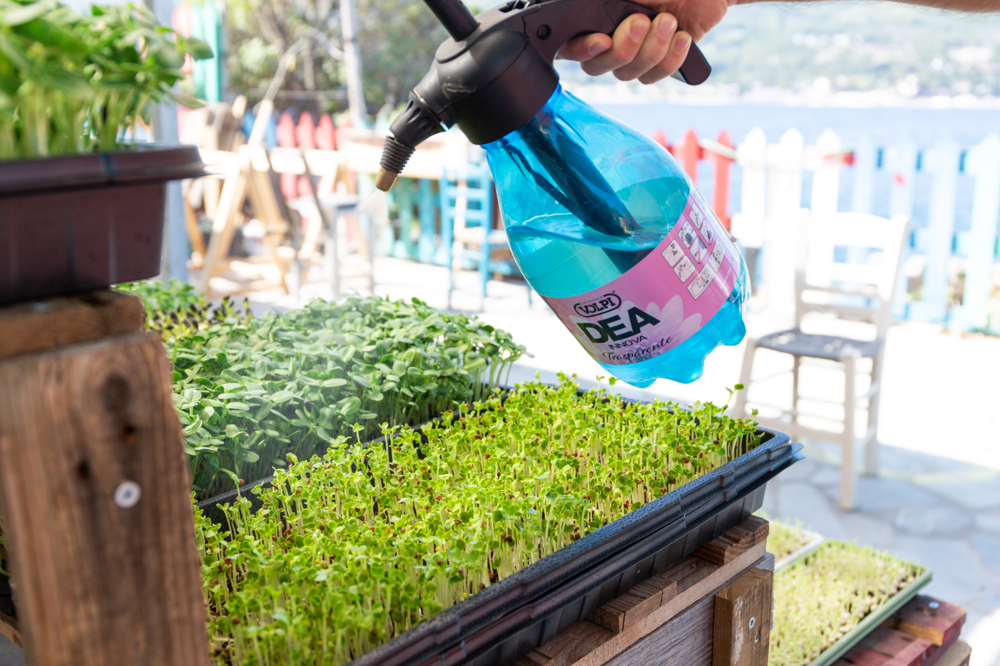
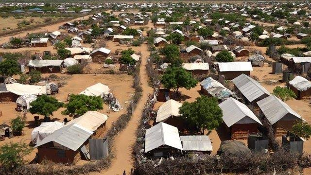

Refuge should mean safety, not more vulnerability.
From Seed to Shelter is an initiative tackling food and nutrition challenges facing displaced people. We look for vulnerabilities overlooked by bigger organisations and work with communities to solve them.

What we do
What we do
-
We identify gaps
Sometimes the challenges faced by the communities aren't immediately obvious. We speak directly to grassroots organisations and community members to gain insight about what bigger organisations miss.
-
We back the people already there
Refugee-led and grassroots organisations know their communities best. We partner with them to support the programs that they already operate, or test solutions with the potential to make a difference.
-
We report honestly, even when it fails
We publish everything we learn. We hope that our learnings will help other organisations in this space.
What we're working on
-

Microgreens farming, Greece
Refugees in Greece receive sufficient calories, but food provided is low quality and micronutrient poor. This leads to negative health impacts.
-

Buffer food interventions, Uganda
Refugees who have newly arrived in Uganda face a reduction in rations provided before their first feasible harvest. This induces significant hunger, and in turn negative coping mechanisms.
Get in touch
-
Partner with us
If you are a community or grassroots organisation tackling food issues, do get in touch.
-
Tell us about a gap
If you know of a vulnerability that nobody else is working on, we'd love to hear from you.
-
Support us
If you believe in our mission and want to contribute to this space, do drop us a message.
Write to hello [at] fromseedtoshelter [dot] com to reach out to us.